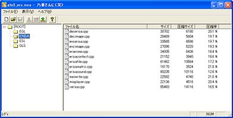
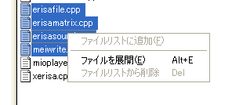
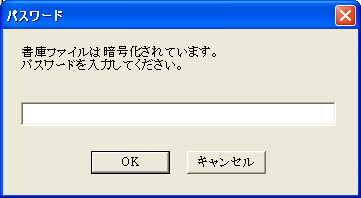

| noa32w - 乃亜さんに（笑） |
■ 書庫展開
メニュー「開く」で、アーカイブ化された NOA ファイルを読み込むとアーカイブファイルのファイルリストが表示されます。
この状態で特定のファイルを選択して、メニューから「ファイルを展開」を選ぶと、選択したファイルだけを指定のフォルダに書き出すことが出来ます。
また、メニュー「全ファイルを展開」、又はツールバーのアイコン（）を押すと、全ファイルをディレクトリつきで展開することが出来ます。ファイル展開中に、暗号化されているファイル不が見つかるとパスワードを入力するダイアログが表示されます。

アーカイブ化したときに入力したパスワードと同じパスワードを入力しないとファイルは展開に失敗します。
|
Copyright
(C) 2003 Leshade Entis, Entis-soft. All rights reserved.
|